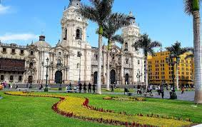
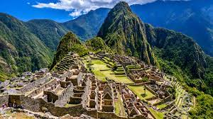
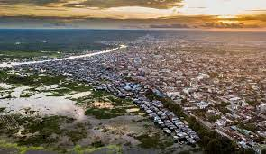

Plaza de Armas, Lima
Plaza de Armas, located in the heart of Lima, is a historic and vibrant square where locals and tourists converge to soak in the city's rich culture. Surrounded by stunning colonial architecture, including the Government Palace and the Cathedral of Lima, this lively square serves as an ideal meeting point. You can gather here to start your exploration of Lima, enjoy street performances, or simply relax at one of the numerous cafes and restaurants. The beautifully lit square at night provides a romantic ambiance, making it a perfect place for a rendezvous or to meet with friends while immersing in Peru's urban charm.

Machu Picchu
The ancient Inca citadel of Machu Picchu is not only a UNESCO World Heritage site but also an awe-inspiring place to meet with fellow travelers. Perched high in the Andes Mountains, this archaeological wonder offers breathtaking views and an unforgettable experience. Whether you're embarking on a trek along the Inca Trail or arriving via train, meeting at Machu Picchu's main entrance allows you to explore the site's mysteries together. Share the magic of this iconic location while uncovering the secrets of the Incas amidst stunning natural beauty.

Iquitos
Known as the "Gateway to the Amazon," Iquitos is the largest city in the world that is inaccessible by road. It's located in the Peruvian Amazon and offers access to the Pacaya-Samiria National Reserve, a pristine and remote rainforest area.
